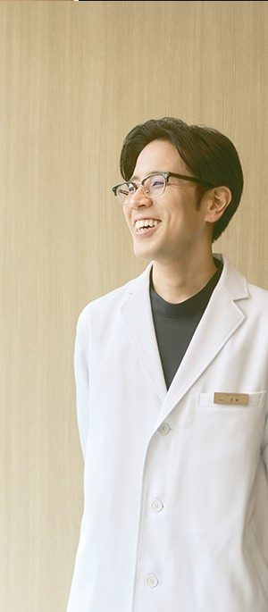

肌のこと、
なんでも
相談してください。
治療を決めていなくても大丈夫。医師が肌を診て、VISIAで肌の状態を記録しながら、一緒に考えます。

気になっていること、
まずは聞かせてください。WA CLINIC 医師
診医師が診察肌を直接見て確認
測VISIAで分析肌の状態を撮影・記録
話相談だけでもOKその場で決めなくて大丈夫
こんな相談、よくあります。
まとまっていなくても、ひとことからで大丈夫です。
シミとそばかす、何が違う？くすみが気になる自分に合う治療がわからない
ダウンタイムが心配何から始めればいい？予算の中でできることは？
毛穴・ハリも相談したい他院で受けた治療のことも聞きたい
相談の流れ
肌を診て、データで確かめてから、プランを考えます。

STEP 1お悩みを聞く気になること、これまでの治療、ご予算もお聞きします。

STEP 2VISIAで撮影・分析見た目だけでは分かりにくい肌の状態も記録します。

STEP 3医師が診察肌を直接見て、結果をいっしょに確認します。

STEP 4プランのご提案治療の進め方と費用をご案内します。
提案を聞いて、その場で決めなくても大丈夫です。
まずは、肌の話をするところから。
無料肌相談を予約する LINEで気軽に聞いてみる